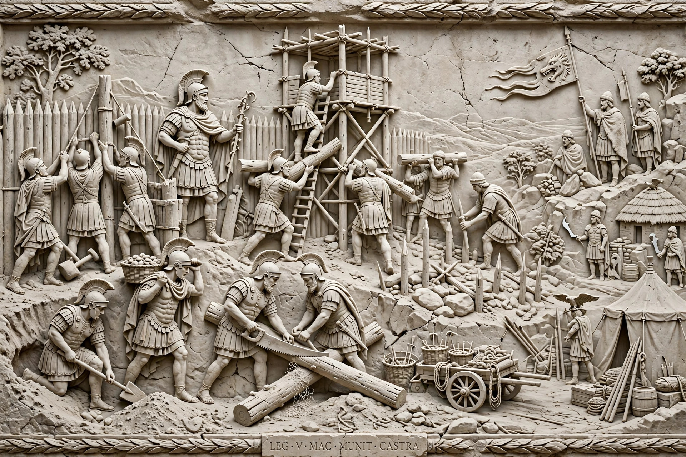

| Dacian Wars | |
|---|---|
| Date | 101–102 and 105–106 AD |
| Location | Dacia (modern Romania and Moldova) |
| Result | Roman victory; Dacia annexed as a Roman province |
| Belligerents | Roman Empire vs. Dacian Kingdom |
| Commanders | Trajan; Decebalus |
The Dacian Wars (101–102 and 105–106) were two military campaigns fought between the Roman Empire and Dacia during the reign of the Roman emperor Trajan. The conflicts were triggered by the constant Dacian threat to the Danubian provinces of the empire, Dacia's growing power under King Decebalus, and Rome's need for Dacia's gold mines and other natural resources. The wars ended with the annexation of Dacia as the Roman province of Dacia Traiana, the first Roman province established north of the Danube.
Under Decebalus, who became king in AD 87, the Dacians had defeated a Roman invasion during Domitian's Dacian War, forcing Rome to conclude a peace that paid Decebalus subsidies in return for nominal submission. Trajan, who became emperor in AD 98, regarded the settlement as humiliating and prepared to settle the Danube frontier by conquest.
In AD 101 Trajan crossed the Danube with a large army, using a bridge of boats, and advanced into Dacia. The Romans won a costly victory at the Second Battle of Tapae and wintered in enemy territory. After a Dacian counterattack across the frozen Danube was defeated, Decebalus sued for peace in 102, accepting terms that stripped him of territory and required him to dismantle fortresses and surrender his war engines. Decebalus, however, rebuilt his forces and re-fortified in defiance of the agreement.
In 105 Trajan launched a second invasion, this time crossing the Danube on the great stone bridge built by Apollodorus of Damascus at Drobeta. Roman columns converged on the Dacian capital, Sarmizegetusa Regia, which fell after its water supply was cut. Decebalus fled into the mountains but, cornered by Roman cavalry — a scene recorded on the tombstone of the trooper Tiberius Claudius Maximus — he took his own life rather than be captured. His head was sent to Rome.
Dacia became a Roman province, colonised by settlers from across the empire, and its gold and silver mines were exploited for imperial revenue. The conquest was commemorated in Rome by Trajan's Column, dedicated in AD 113, whose spiral frieze narrates the campaigns in stone, and by the great Forum of Trajan, paid for from the spoils of war.